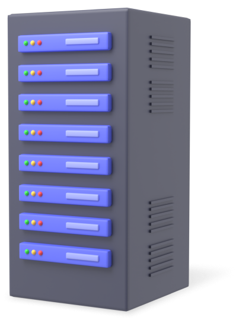
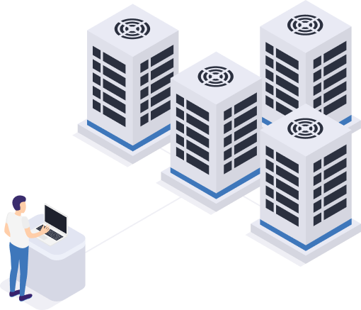
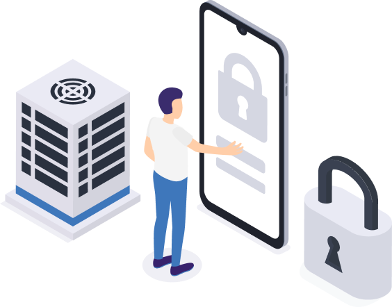

<section class="section-about-dc">
    <div class="container about-dc-container">
        <div class="about-dc-item-reverse">
            <div class="dc-info-item left-item">
                <h3 class="title-section">Электропитание</h3>
                <p>Электропитание обеспечивается двумя независимыми вводами от разных электростанций
                    и дизель-генераторной установкой.</p>
                <p>Система электропитания дата-центра состоит из комплекса, включающего в себя 3 источника
                    бесперебойного питания (ИБП), зарезервированных по принципу N+1 и
                    одной дизель-генераторной установки (ДГУ) с запасом топлива для автономной работы в течение 20
                    часов.</p>
                <p>Дизель-генераторная установка рассчитана на одновременную работу всего оборудования
                    дата-центра, системы охлаждения и на подзарядку батарей всех ИБП. ДГУ проходит систему ежемесячных
                    испытаний.</p>
            </div>
            <div class="dc-img-item">
                
            </div>
        </div>
        <div class="about-dc-item">
            <div class="dc-img-item">
                
            </div>
            <div class="dc-info-item">
                <h3 class="title-section">Каналы связи</h3>
                <p>Оптоволоконная инфраструктура построена по системе «кольцо». Транспортная сеть 10/40G построена по
                    технологии 2N. Подключения клиентов осуществляются по технологиям 10/100/1000 auto (copper-rj45) и
                    1/10G (fiber sm/mm).
                    Возможно LACP-включение в ядро сети в порты 2x1/10G (fiber sm/mm) с резервированием коммутаторов на
                    нашей стороне. Операторы, включенные в транспортную сеть:
                    Becloud, НЦОТ, МТС, Деловая сеть, TCM, Айпи Телком, Флайнет, Qline, Айчына, Анитекс.</p>
                <p>Операторы связи, имеющие точку присутствия (коммутатор) в ЦОД, и оказывающие клиентам ЦОД услугу
                    присоединения к их сетям:
                    ТСМ, Деловая сеть, Белтелеком, МТС, Банковская финансовая телесеть (БФТ), Айпи Телком, Флайнет. </p>
                <a href="https://noc.datahata.by/" class="button button_bordered"><span>Информация для сетевых инженеров</span></a>
            </div>
        </div>
        <div class="about-dc-item-reverse">
            <div class="dc-info-item left-item-2">
                <h3 class="title-section">Безопасность</h3>
                <p>Помещение ЦОД находится на закрытой территории. Все помещения и прилегающая территория круглосуточно
                    охраняются. Система безопасности двухуровневая: служба охраны завода с доступом по электронным
                    пропускам, и система контроля доступа и видеонаблюдения дата-центра.</p>
                <p>Система контроля и учета доступа (СКУД) обеспечивает контроль и санкционирование доступа в помещения
                    дата-центра. Ведется архив событий.</p>
                <p>Все помещения ЦОД оборудованы системой видеонаблюдения. Ведется запись видеоархива. Возможна
                    организация онлайн – видеонаблюдения.</p>
                <p>Двери помещений оснащены электронными замками и считывателями карт.</p>
                <p>Система обнаружения пожаров, датчики задымления и система пожаротушения обеспечивают
                    пожаробезопасность дата-центра. Все элементы внутренней отделки изготовлены из негорючих материалов
                    с пожароустойчивостью по классу НГ/Г1.</p>
            </div>
            <div class="dc-img-item">
                
            </div>
        </div>
        <div class="about-dc-item">
            <div class="dc-img-item">
                
            </div>
            <div class="dc-info-item right-item">
                <h3 class="title-section">Обслуживание</h3>
                <p>Системные администраторы ЦОД дежурят круглосуточно – 24/7.</p>
                <p>Дата-центр оснащен системой комплексного мониторинга оборудования (состояние сетей и каналов связи,
                    работоспособность серверного и сетевого оборудования, обнаружения DDoS атак), которая извещает о
                    любых отклонениях в работе систем.</p>
                <p>Коэффициент отказоустойчивости (uptime) составляет 99,991 % (возможно заключение договоров с SLA).
                </p>
            </div>
        </div>
    </div>
</section>
